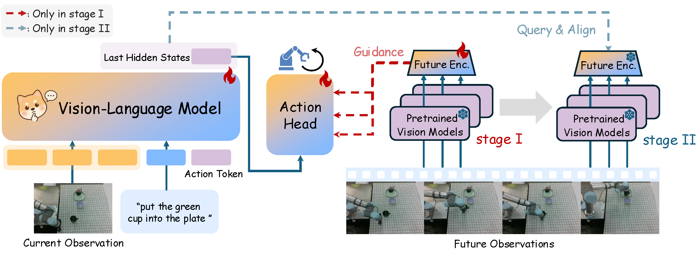
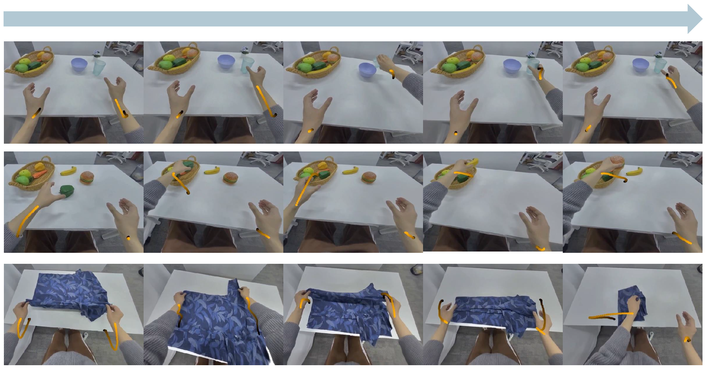

Leveraging future observation modeling to facilitate action generation presents a promising avenue
for extending the capabilities of VLA models. However, existing approaches struggle to strike a balance between
maintaining compact, predictable future representations and preserving sufficient fine-grained information to guide precise action generation. To
address this limitation, we propose WoG, a VLA that directly maps future observations into
compact conditions injected into the action inference pipeline. Subsequently, the VLA is trained
to simultaneously predict these compressed conditions alongside future actions, thereby achieving effective world modeling within the condition
space. We demonstrate that modeling and predicting conditions not only facilitates
fine-grained action generation but also exhibits
superior generalization abilities. Moreover, it learns effectively from extensive human manipulation videos.
Condition in and Condition out: Complete Inference

To identify a non-redundant predictive space for world action model, the space must satisfy the criterion that its information serves
as a sufficient and effective condition for action generation. By virtue of this role, such a space is intrinsically highly relevant to action; consequently, for a VLA model
inherently designed to model actions, inferring this space becomes a tractable task. To discover such a space, we argue that the most efficient strategy is to directly incorporate
future observations as conditions into the action inference pipeline. The representation encoded through this pipeline thus naturally constitutes the desired
efficient condition space. Subsequently, We decouples future observations from the pipeline and simultaneously predicts these future conditions alongside actions, thereby transferring the knowledge of
future conditions into the VLA.
WoG for Fine-grained Action Generation
In real-world experiments, WoG demonstrates distinct advantages in fine-grained control, robust generalization,
and high scalability across diverse manipulation tasks. For in-distribution scenarios involving rigid, articulated,
and deformable objects, WoG significantly outperforms existing baselines by providing precise, future-aware guidance essential
for complex dynamics and collision-aware trajectory planning. Crucially, WoG exhibits exceptional resilience in Out-of-Distribution
(OOD) settings, such as novel objects, background shifts, and severe lighting changes, since its compact condition space effectively
distills action-relevant dynamics from pre-trained visual encoders while filtering out redundant visual noise. Furthermore,
the framework shows remarkable cross-embodiment scalability; it can seamlessly integrate large-scale unannotated human videos and
heterogeneous UMI data to capture embodiment-agnostic motion priors, which yields a performance boost in downstream tasks.
"put the green cup into the plate"
"put the red cup into the plate" (unseen)
"fold the brown towel" (unseen)
"fold the blue towel"
"fold the white towel"
"close the microwave"
"fold the blue towel" (light change)
"put the green cup into the plate"
"put the green cup into the plate" (background change)
"fold the white towel" (background change)
"put the green cup into the plate"
"fold the white towel"
Any Videos are Conditions

WoG learns effectively from human videos with or without action annotations.
We trained the model on 1920 hours of unannotated human manipulation videos (only conditions supervision in the second stage) and achieved explict improvements in
pick-and-place performance and generalization ability. Then, we annotated 11% (220 hours) of the videos with actions to simulate the real-world condition where annotated
human manipulation videos are sparse, while unannotated videos are abundant. By incorporating these 220 hours of videos for human
action supervision in the first stage and condition supervision on the entire 1920 hours in the second stage, the model achieved
improved performance and generalization across various tasks.
{kind=link}
{kind=link}
{kind=link}
{kind=link}
{kind=link}
{kind=link}
{kind=link}
{kind=link}